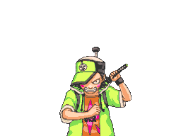

Ace Attorney Investigations: Miles Edgeworth
Updated on 2021-05-07
It is finished! The last chapter of Investigations was certainly the longest and the most complex of the bunch, connecting all of the previous cases and culminating in an epic confrontation. A word of advice though - do not take 2-week breaks from an adventure game in the middle of its last chapter - getting back into the thick of it can be a pain! Nevertheless, Investigations have been a pleasure to work through till the very end. It felt like going on an adventure, meeting new friends and making good memories along the way.
I have been playing Ace Attorney games a lot lately.
This post is about the series as a whole as well as "Ace Attorney Investigations: Miles Edgeworth"††Original title '逆転検事' translates to 'Turnabout Prosecutor' in particular.
Context
I have played through Ace Attorney 1-3 before back in the olden DS days, in English. I had only just begun my journey through the tumultuous oceans of Japanese language, and my boat was not up to the snuff when it came to the text-heavy visual novel kind of games. It was more like a raft, really. Lately, though, I have been having bouts of nostalgia towards my time in the mountains of eastern Hiroshima, plus the boat (which is the knowledge of Japanese) became more like a proper boat. Metaphors, eh? In short, I wanted to practice my language skills and play some good games along the way! So I have ploughed through parts 1-4, 3DS versions, in about a month. Surprisingly, the games were not difficult to understand at all, although I'm sure some of the finer character name-based jokes went over my head. Only upon reaching part #5 did I suddenly discover the urge to write about it. The urge strong enough to bring my Jekyll blog back from the immortal dead!
Series intro
Ace Attorney rightfully claims to be one of the best visual novel series in business. Captivating plot, endearing characters, satisfying mechanics where you advance the plot by building up and arguing your case in court. What's not to like! As an added bonus, it's like one long reading comprehension test when playing in Japanese. Owing to its success, the majority of the games were localized into English and re-released for multiple platforms, the most recent at the moment of this writing being "Phoenix Wright: Ace Attorney Trilogy" for Switch.
A game is divided into cases††Case names traditionally have 逆転 - turnabout - in their name, e.g. 蘇る逆転 - Ressurected Turnabout, or chapters. The first case is shorter than the rest, and can serve as a tutorial, although the player always has an option to skip explanatory parts. Cases are further divided into days, and during each day the player alternates between first-person exploration of the different locations and arguing their case in the court of law. During the exploration phase the focus is on gathering clues by examining locations, talking to characters and sometimes presenting them with the clues gathered before to unlock conversation topics. Each part of the series introduces mechanics of its own, such as using supernatural powers of magatama to see into people's hearts or utilizing the latest and greatest from the forensic science to discover fingerprints or blood stains.
Court phase is the most dramatic part of the game. Player's job as a lawyer is to cross-examine witnesses, find true culprits and prove them guilty. This is done by discovering and pointing out contradictions in the testimonies using previously gathered evidence. However, presenting wrong evidence results in penalties that eventually lead to the "guilty" verdict i.e. "game over" screen. And that is the gist of it!
One of the best parts of the game is the character animation, e.g. how they react to their testimony being overturned, sometimes revealing a whole new personality.
Adventure games can be frustrating due to bizzare logic when it comes to puzzles, but this is not the case with Ace Attorney. I had to look up solutions only a couple of times for games 1 through 4, and it was mostly due to playing late and being impatient.
Ace Attorney Investigations: Miles Edgeworth
There are several differences when it comes to Investigations vs the previous games in the series.
- Change of protagonist! Titular attorney Phoenix Wright this time is replaced by his arch-enemy (and sometimes best friend?) Miles Edgeworth. Edgeworth††If you enter '御剣怜侍', Japanese name of the character, in Google Translate, it'll come back to you with 'Miles Edgeworth' has been the protagonist briefly in the 3rd game, giving us a foretaste of his calm, level-headed and at times charmingly awkward inner monologue. This time it's Edgeworth all the way.
- Addition of third-person perspective! At first I was a bit sceptical about this due to how character sprites looked against animated backgrounds, but this was actually due to playing a scaled up DS game on a new 3DS XL model (see the next bullet point). Third-person perspective gave animators a brand new dimension to work with, my favourite so far is Detective Gumshoe stomping ground in frustration. I wonder if Investigations in this regard has been a testing bed of sorts for the excellent Ghost Trick. I would also not be against a "Beat 'em up" game in this style.
- DS version all the way! Unlike parts 1-4, Investigations was originally released for DS and never re-released for 3DS or Switch. This means a slightly out-of-date experience when it comes to visuals, that are either scaled up or look a bit too small on bigger 3DS XL screens. I might dig out my DS Lite for Investigations 2, but after a while scaled graphics do not look so bad.
The core of the game, which is a brilliantly written, illustrated and animated visual novel, stays the same. You are still solving crimes by looking for clues and having passionate arguments, only this time it happens right on the crime scene and not in the court of law. Finally, while there are multiple references to the cases from the previous games, their knowledge is absolutely optional, although it does fill you with warm, fuzzy feelings.
Playing in Japanese
I highly recommend 逆転裁判 for intermediate and advanced levels, i.e. JLPT N2-N1 folk. After introducing a bunch of court-related vocabulary at the start, the writing stays general enough so that one does not have to look up new words constantly. More difficult terms are often introduced as kanji immediately followed by hiragana/katakana, so they are easy to look up. My favourite app of all time for that is Japanese Kanji Study - 漢字学習. There are several characters that speak in an intentionally obscure way, either with heavy dialect or with all the (incorrectly used!) kanji. Parts critical to the story progression are always clear, though. Finally, I have even more respect now for the localization teams - translating all those puns into English must have been a monumental task indeed!
Conclusion
I have not actually finished the game yet, having reached only the 4th case. However, I can heartily recommend Investigations as well as Ace Attorney series as a whole, whichever language you choose to play it in.
References
http://www.court-records.net/ has been a great source of game art.